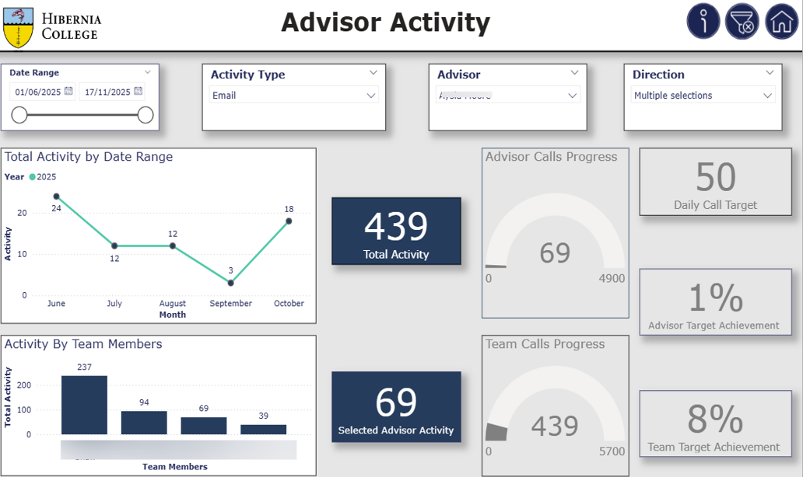
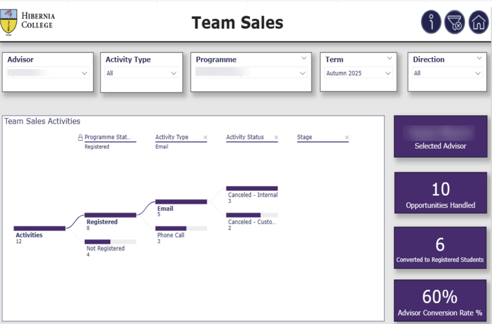

Customer Journey Analysis
Analysing student progression, conversion patterns and advisor activities through Power BI.
Project Overview
Developed an interactive Power BI dashboard to analyse the student journey from Opportunity to Enrolment, providing visibility into conversion patterns, journey duration and advisor activities. The report helped examine how opportunities progressed through the enrolment pipeline and how advisor interactions contributed to the process.
My Contributions
- Prepared and transformed data exported from Microsoft Dynamics for reporting and analysis.
- Developed the Power BI data model and DAX measures to calculate journey durations, conversion rates and key performance indicators.
- Created interactive funnel visualisations to track progression through the enrolment pipeline.
- Analysed advisor activities, including calls, emails and tasks, through visual reports.
- Collaborated with a senior colleague and validated dashboard outputs.
Dashboard Highlights
- Opportunity-to-Enrolment conversion funnel
- Median time spent at different journey stages
- Overall student journey duration
- Advisor activity and team contribution analysis
- Interactive programme, term and advisor filters
Dashboard Screenshots
Opportunity Conversion and Journey Duration
Visualising the conversion pipeline and the time taken for opportunities to progress towards enrolment.

Advisor Activity and Team Sales
Exploring advisor interactions, team contributions and activity patterns throughout the enrolment process.

Tools and Technologies
- Business Intelligence: Power BI
- Data Modelling and Calculations: DAX
- Data Preparation: Power Query, Microsoft Excel
- Database Technologies: SQL, MySQL
- Data Management: SharePoint
Project Outcome
Created a consolidated view of the student enrolment journey, helping identify conversion patterns, time spent at different stages and advisor activity. The dashboard supported better visibility into the enrolment pipeline and its progression.
Note: Selected dashboard visuals are displayed for portfolio purposes. The original Power BI report and underlying organisational data are not shared publicly.